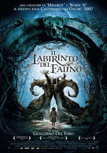
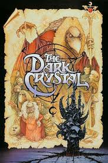
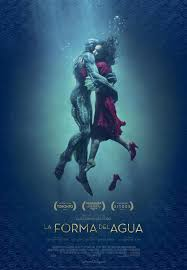

Home
Estrenos
Generos
Recomendadas
Series
Películas Recomendadas para Ver en tu Vida (por Género)
Aventura
Cómicas
Terror
Acción
Romanticas
Fantasia
El laberinto del fauno
El cristal oscuro
La forma del agua



En la España falangista de 1944, la joven hija de un oficial del ejército escapa a un mundo de fantasía misterioso pero cautivador.
En otro planeta en el pasado distante, un Gelfling se embarca en una búsqueda para encontrar el fragmento perdido de un cristal mágico, y así restaurar el orden en su mundo
En una instalación de investigación de alto secreto en la década de 1960, una conserje solitaria forma una relación única con una criatura anfibia que se encuentra en cautiverio.